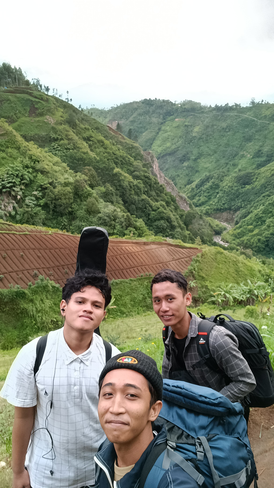
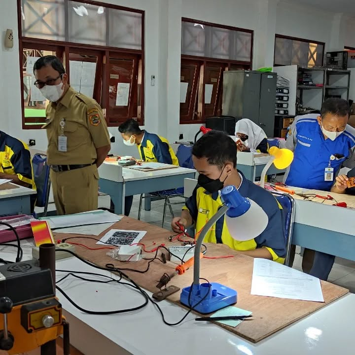
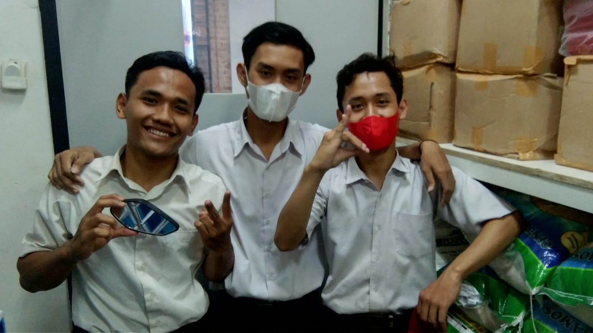
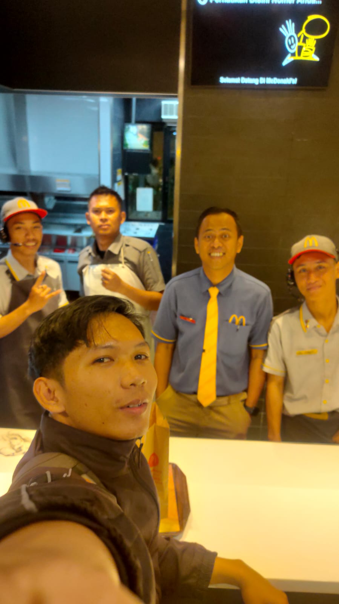
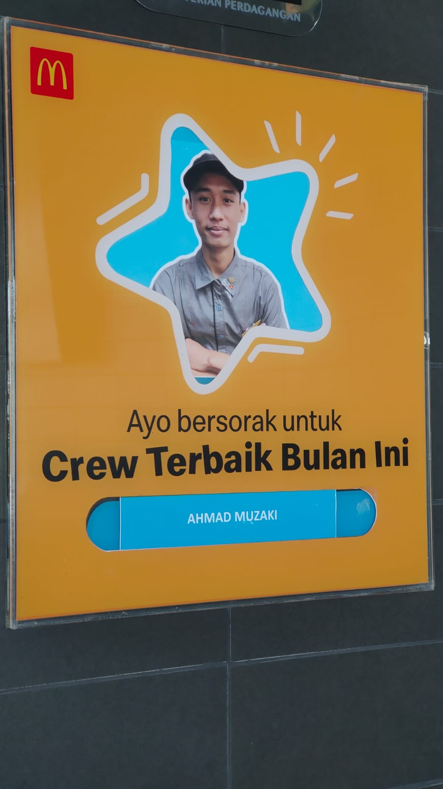
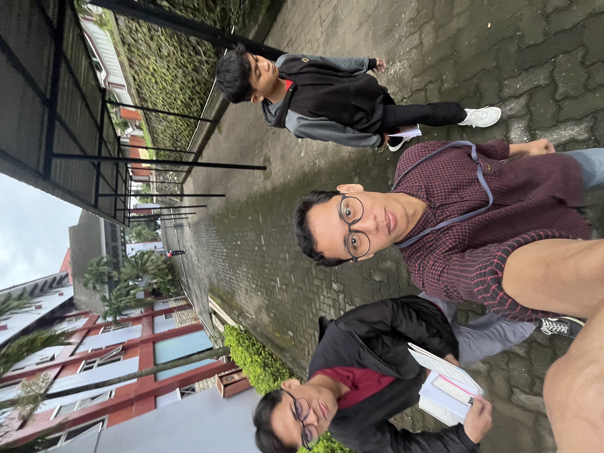
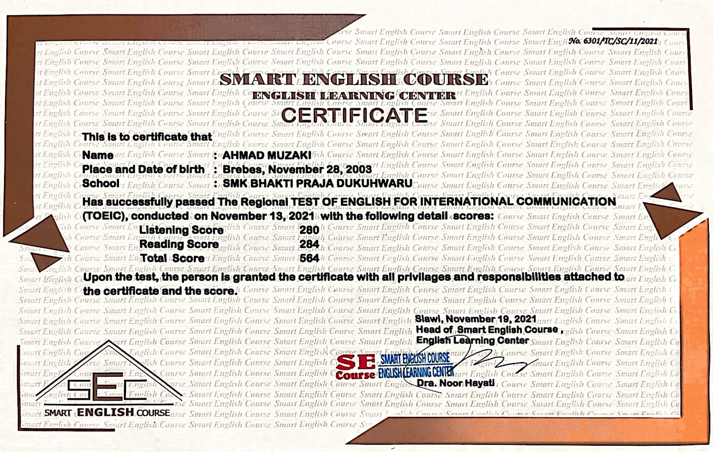

Tentang Saya
Halo! Saya Ahmad Muzaki, lulusan SMK Teknik Elektronika tahun 2022. Walau judulnya “elektronika”, perjalanan saya nggak cuma mutar-mutar kabel dan solder, tapi juga ngelilingin berbagai dunia kerja. Mulai dari dapur ayam goreng, mesin jahit, sampai kasir minimarket. Serius, CV saya kayak konten YouTube: lengkap, variatif, dan penuh warna.

Di sela-sela kesibukan, saya juga punya hobi naik gunung. Di atas ketinggian itulah saya belajar makna kerja keras—dan betapa pentingnya sinyal HP. Tapi sungguh, naik gunung ngajarin saya soal ketekunan, perencanaan, dan pentingnya bawa camilan.

Latar belakang saya di teknik elektronika bukan sekadar teori, saya beneran turun langsung ke lapangan. Lewat PKL di bengkel multi teknik, saya terbiasa bongkar pasang alat, tes rangkaian, dan belajar troubleshooting. Satu-satunya hal yang lebih cepat dari short circuit? Deadline laporan PKL.

Pekerjaan pertama saya adalah di CFC. Di sinilah saya belajar bahwa di balik crispy chicken yang nikmat, ada kerja keras luar biasa. Mulai dari siapin order sampai ngepel lantai, semua saya lakoni. Bonusnya? Bisa hafal jingle promosi luar kepala.

Lanjut ke McDonald's, saya dipercaya sebagai crew dan akhirnya dapat penghargaan sebagai crew terbaik. Ya, saya pernah jago di dapur, bukan hanya di game simulasi, tapi beneran di dapur asli. Multitasking antara ngurus orderan, customer, dan senyum ramah itu nggak gampang—tapi saya bisa.

Dan ini buktinya—sertifikat crew terbaik dari McD. Walau nggak dapet piala emas atau medali, pengakuan ini jadi motivasi besar buat saya untuk terus ngasih performa terbaik, apapun peran saya di dunia kerja.

Di industri garmen, saya kerja sebagai operator sewing di PT Apparel One. Proses produksi di sini penuh presisi dan ritme kerja yang cepat. Kalau kerja di sini nggak ngelatih fokus dan kesabaran, saya nggak tahu apa lagi yang bisa.

Ngomong-ngomong, saya juga punya sertifikat Bahasa Inggris. Biarpun nggak lulus dari Hogwarts, setidaknya saya bisa paham instruksi manual dan ngobrol dikit-dikit sama bule tanpa panik.
Jadi, siapakah saya? Saya adalah orang yang fleksibel, cepat belajar, dan nggak takut tantangan. Pengalaman saya membuktikan bahwa saya bisa kerja keras, adaptif, dan tetap bisa ketawa meski dikejar deadline. Hidup itu berat, tapi kalau dijalani dengan niat dan sedikit humor, semua jadi lebih ringan.